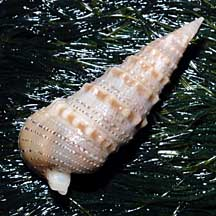
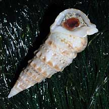
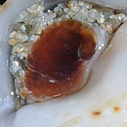
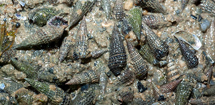
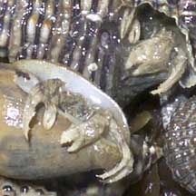

|
|
| shelled snails text index | photo index |
| Phylum Mollusca > Class Gastropoda |
| Creeper
snails Family Cerithiidae updated Jul 2020 Where seen? Tiny creeper snails are common on our shores but often overlooked. They may be found on sandy shores, coral rubble and reefs on many of our shores. They are often seen in groups of individuals. Features: 2 2.5cm. Shell long and narrow, distinguished by an upturned siphonal canal at the opening that looks like a little spout. This protects the siphon as the snail hides just beneath the sand. The shell opening is oval, and the operculum is made of a horny material usually brown usually with only a few whorls. Sometimes confused with Horn snails (Family Potamididae) which also have an operculum made of a horny material but with a tight spiral pattern. Horn snails have siphonal canals that are less pronounced and they are generally larger than Creeper snails. More on how to tell these snails apart. |
 Sentosa, Oct 08 |
 Shell opening. |
 Operculum with only a few whorls. |
| What do they eat? Creeper snails
are often found in groups of many individuals packed close to one
another. They feed on algae and detritus on the sea bottom, often
near reefs. Role in the habitat: Should the tiny snail die, the empty shell is often taken over by tiny hermit crabs. |
 Plain creeper snails sometimes seen in large numbers. Pasir Ris Park, Aug 13 |
 Empty shells may be taken over by tiny huddling hermit crabs. St John's Island, Jan 06 |
| Human uses: Some of the prettier species are collected
for the shell trade. Status and threats: Traill's creeper (Cerithium trailli) is listed as 'Endangered' on the Red List of the threatened animals of Singapore, as shores where it was originally found have been lost to reclamation. Like other creatures of the intertidal zone, Creeper snails are affected by human activities such as reclamation and pollution. Trampling by careless visitors and over-collection can also have an impact on local populations. |
| Some Creeper snails on Singapore shores |

| Family
Cerithiidae recorded for Singapore from Tan Siong Kiat and Henrietta P. M. Woo, 2010 Preliminary Checklist of The Molluscs of Singapore. in red are those isted among the threatened animals of Singapore from Davison, G.W. H. and P. K. L. Ng and Ho Hua Chew, 2008. The Singapore Red Data Book: Threatened plants and animals of Singapore. +Other additions (Singapore Biodiversity Records, etc)
|
Links
References
|